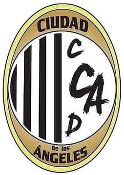

Infantil A
C.D. Ciudad de los Ángeles · Preferente Infantil Grupo 5
Cargando…
Cargando partidos…

C.D. Ciudad de los Ángeles · Preferente Infantil Grupo 5
Cargando…
Cargando partidos…
Introduce la contraseña para poder editar la plantilla, las noticias o preparar la convocatoria.